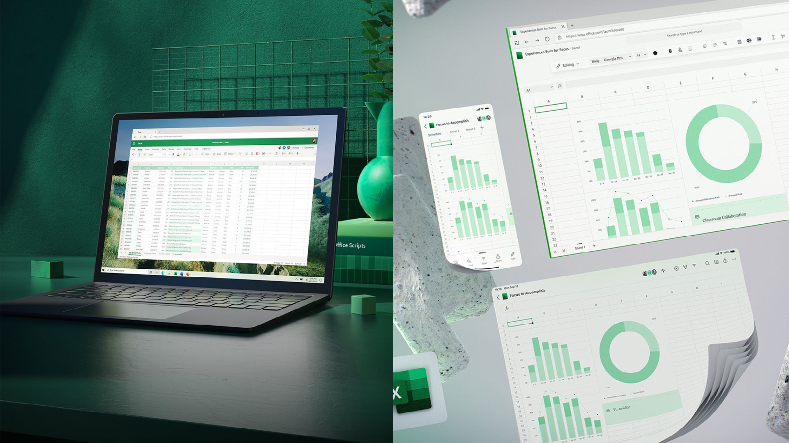

In this project we use MYSQL Workbench to explore and analyze Covid 19 Data of Asia from jan,2020 To Nov,2022 taken from ourworldindata website, which provides us insight about death percentage per population,total death counts, percentage of vaccination done per population and much more about the different countries in Asia.


As Data Cleaning is the primary and most important part which needs to be done before we analyse data so in this project we use MYSQL Workbench to clean Nashville Housing dummy Data taken from Github such as Updating, Altering Columns or Deleting useless or Duplicate Columns so we can perform better analysis on the given Data.
In this project we first clean the row data using power query in excel and then make visualization to understand the survey done on Data Profession people and do analysis based on the answers given by them. This is an interactive dashboard and every chart points can be used as filter, i.e if we click on any chart point it will give us new prespective filtered according to that data point.

Caution: Please Download the file and run in Excel as Google Sheets does not present best view for this file.
In this Project we use excel to analyse a dummy data of a imaginary hotel and create three interactive dashboards{Customer Service, Finance, Order Fulfillment}.

Caution - This Dashboard is made in PowerBi Desktop so can't be published online, Please Download files and Run in PowerBi.
In This Project we first clean and analyse data using power querry and then visualize the movies data (1980-2020) taken from Kaggle using PowerBi to get various insights out of it.